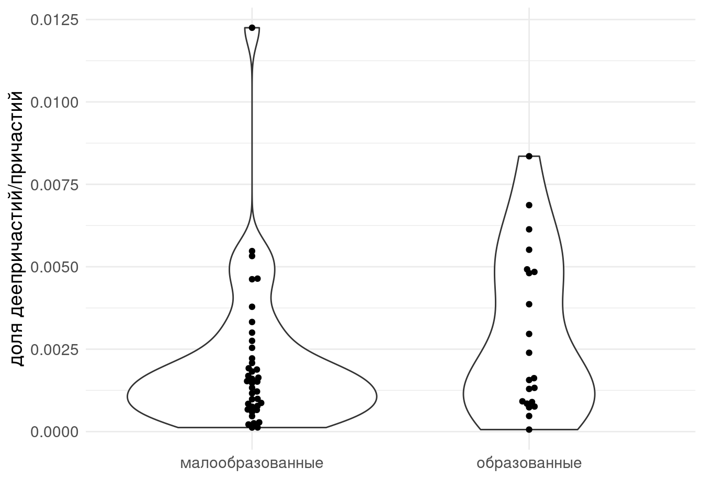
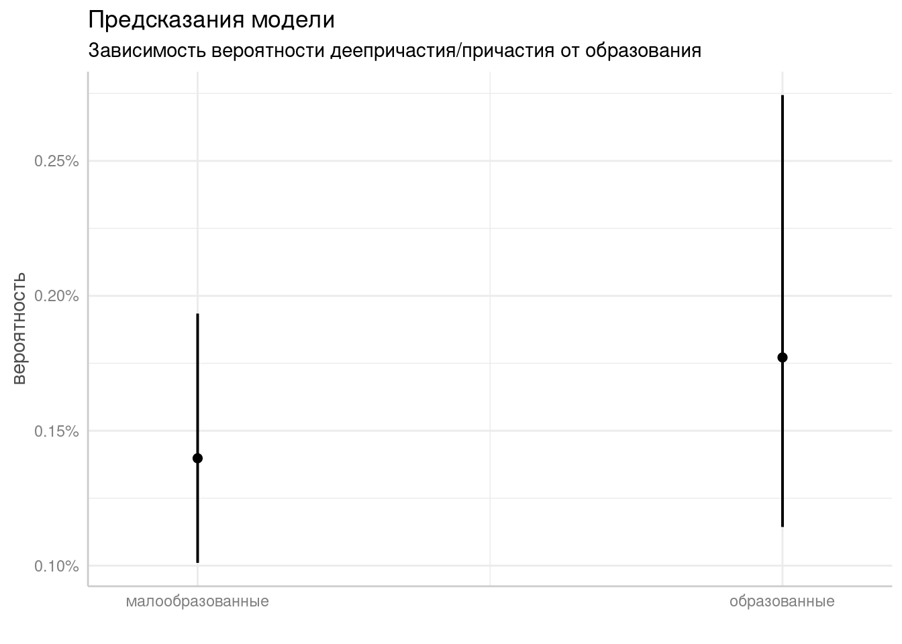
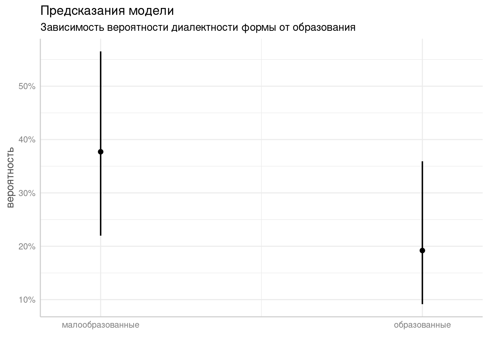
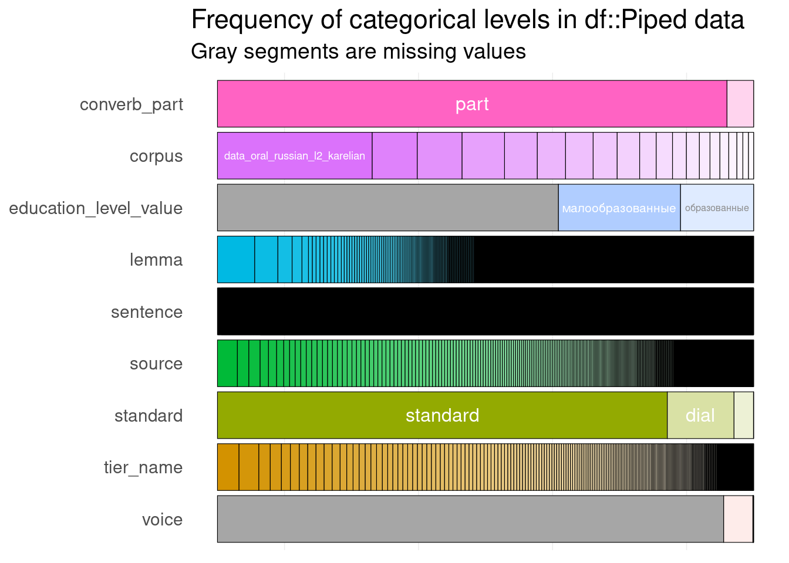
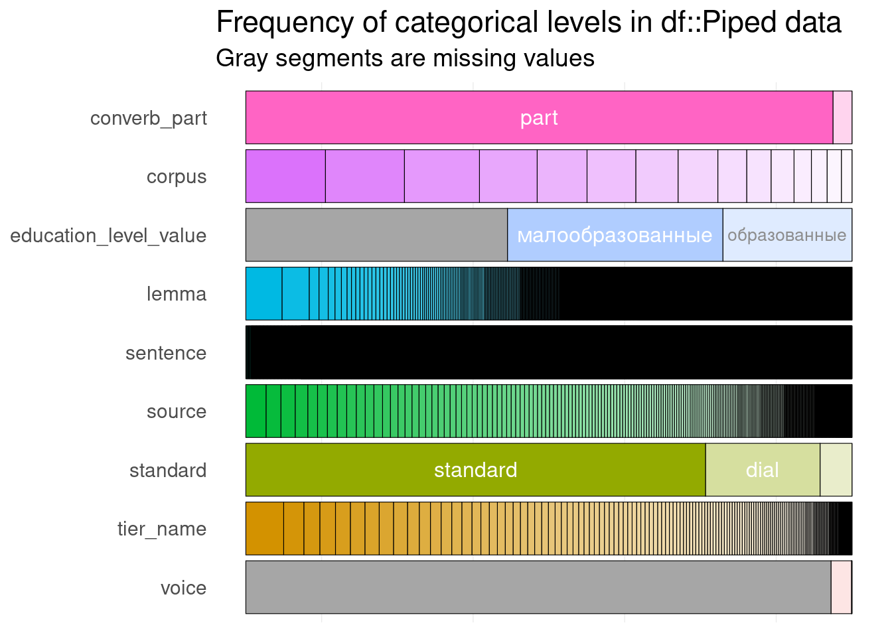
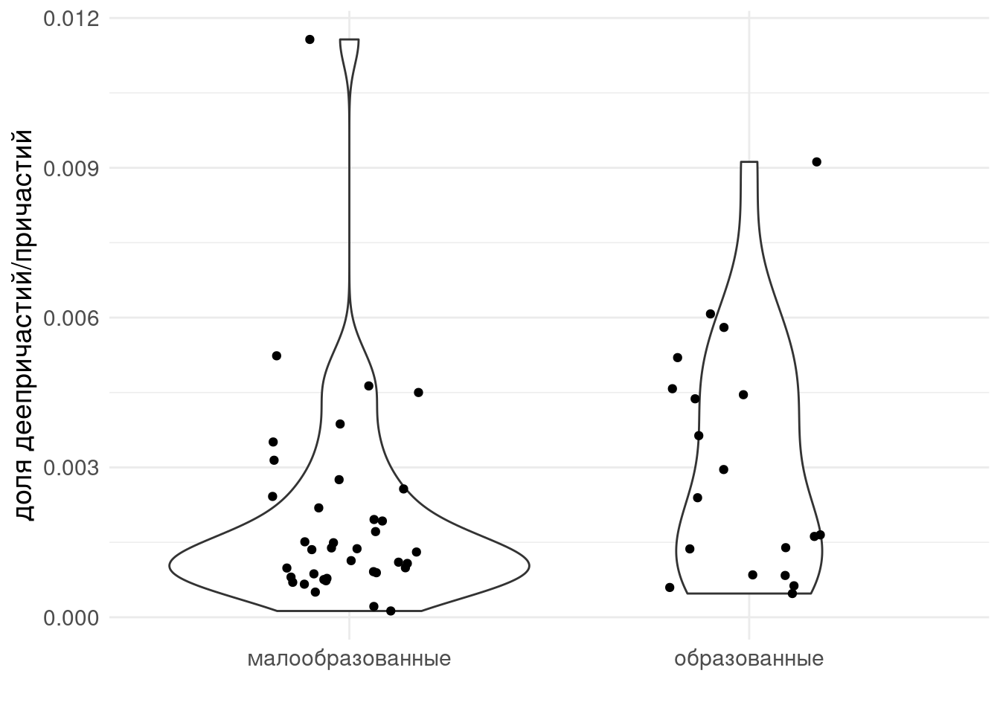
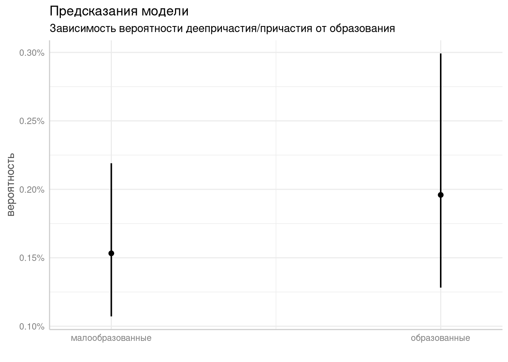
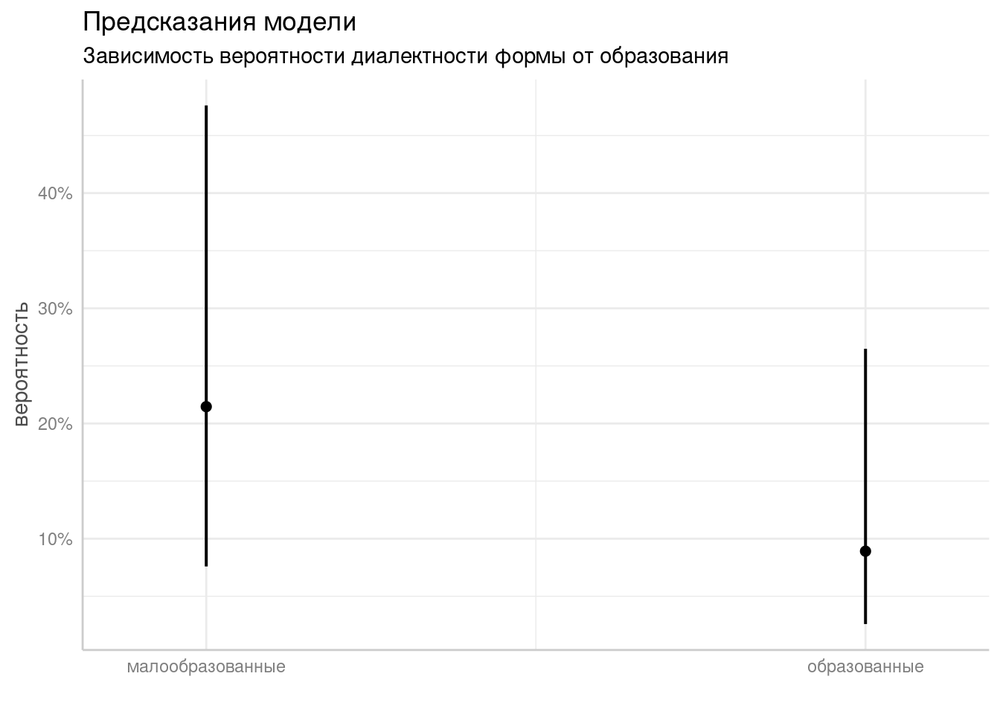

# добавить число слов
udpiped <- read_csv("/home/agricolamz/work/databases/spoken_corpora/udpiped.csv")
df <- readxl::read_xlsx("participle_result_v1.xlsx")
udpiped %>%
filter(upos != "PUNCT") %>%
count(corpus, tier_name) %>%
rename(total_tokens = n) %>%
right_join(df) %>%
arrange(id) %>%
writexl::write_xlsx("participle_result_v1.xlsx")
df2 <- readxl::read_xlsx("participle_result_v2.xlsx")
udpiped %>%
filter(upos != "PUNCT") %>%
count(corpus, tier_name) %>%
rename(total_tokens2 = n) %>%
right_join(df2, by = join_by(corpus, tier_name), multiple = "all") %>%
arrange(id_new) %>%
mutate(total_tokens = ifelse(is.na(total_tokens2), total_tokens, total_tokens2)) %>%
select(-total_tokens2) %>%
writexl::write_xlsx("participle_result_v2_updated.xlsx")Круглый стол по диал. для Светы
Загрузка данных
Загружу библиотеки, которые я буду использовать:
library(tidyverse)
library(inspectdf)
library(readxl)
library(lme4)
library(ggeffects)
theme_set(theme_minimal()+theme(legend.position = "bottom", text = element_text(size = 14)))
df <- read_xlsx("participle_result_v2_updated.xlsx")Я обновил количество слов, почему-то получились другие результаты. Еще я немного переименовал корпуса.
Связь образования и употреблений причастий/деепричастий
df %>%
filter(str_detect(corpus, "dialect_"),
!is.na(education_level_value)) %>%
count(corpus, tier_name, education_level_value, total_tokens) %>%
mutate(ratio = n/total_tokens) %>%
ggplot(aes(education_level_value, ratio))+
geom_violin()+
ggbeeswarm::geom_beeswarm()+
labs(x = "", y = "доля деепричастий/причастий")
df %>%
filter(str_detect(corpus, "dialect_"),
!is.na(education_level_value)) %>%
count(corpus, tier_name, education_level_value, total_tokens) %>%
mutate(non_converbs = total_tokens - n) %>%
rename(converbs = n) %>%
select(-total_tokens) %>%
pivot_longer(names_to = "type", values_to = "n", converbs:non_converbs) %>%
uncount(n) %>%
mutate(type = factor(type, levels = c("non_converbs", "converbs"))) %>%
glmer(type~education_level_value+(1|corpus/tier_name), family = "binomial", data = .) ->
fit_conv
fit_conv %>%
ggpredict(terms = c("education_level_value")) %>%
plot()+
scale_y_continuous(labels = scales::percent)+
labs(x = "", y = "вероятность", title = "Предсказания модели",
subtitle = "Зависимость вероятности деепричастия/причастия от образования")Scale for y is already present.
Adding another scale for y, which will replace the existing scale.
Связь диалектности форм и образования
Сколько наблюдений мы анализируем?
df %>%
filter(str_detect(corpus, "dialect_"),
!is.na(education_level_value),
!is.na(standard)) %>%
filter(!str_detect(standard, "\\?")) %>%
mutate(standard = ifelse(standard == "dial", "non-standard", standard),
standard = factor(standard, levels = c("standard", "non-standard"))) %>%
count(education_level_value, standard)df %>%
filter(str_detect(corpus, "dialect_"),
!is.na(education_level_value),
!is.na(standard)) %>%
filter(!str_detect(standard, "\\?")) %>%
mutate(standard = ifelse(standard == "dial", "non-standard", standard),
standard = factor(standard, levels = c("standard", "non-standard"))) %>%
glmer(standard~education_level_value+(1|corpus/tier_name), family = "binomial", data = .) ->
fit_dialsummary(fit_dial)Generalized linear mixed model fit by maximum likelihood (Laplace
Approximation) [glmerMod]
Family: binomial ( logit )
Formula: standard ~ education_level_value + (1 | corpus/tier_name)
Data: .
AIC BIC logLik deviance df.resid
1382.1 1402.7 -687.0 1374.1 1273
Scaled residuals:
Min 1Q Median 3Q Max
-2.8978 -0.6047 -0.2695 0.6598 4.7635
Random effects:
Groups Name Variance Std.Dev.
tier_name:corpus (Intercept) 0.6073 0.7793
corpus (Intercept) 1.1795 1.0860
Number of obs: 1277, groups: tier_name:corpus, 60; corpus, 10
Fixed effects:
Estimate Std. Error z value Pr(>|z|)
(Intercept) -0.5020 0.3901 -1.287 0.19821
education_level_valueобразованные -0.9352 0.3168 -2.952 0.00316 **
---
Signif. codes: 0 '***' 0.001 '**' 0.01 '*' 0.05 '.' 0.1 ' ' 1Warning in abbreviate(rn, minlength = 11): abbreviate used with non-ASCII chars
Correlation of Fixed Effects:Warning in abbreviate(rn, minlength = 6): abbreviate used with non-ASCII chars (Intr)
e__образова -0.245fit_dial %>%
ggpredict(terms = c("education_level_value")) %>%
plot()+
labs(x = "", y = "вероятность", title = "Предсказания модели",
subtitle = "Зависимость вероятности диалектности формы от образования") 
Разница статистически значима (z value -2.952, p-value 0.00316). Модель предсказывает почти в два раза больше диалектных форм у малообразованных по сравнение с образованными.
Загрузка данных
Загружу библиотеки, которые я буду использовать:
library(tidyverse)
library(inspectdf)
library(readxl)
library(lme4)
library(ggeffects)
theme_set(theme_minimal()+theme(legend.position = "bottom", text = element_text(size = 14)))Начнем с того, что считаем Ваши данные:
df <- read_xlsx("participle_result_v1.xlsx")Во-первых, как видите, я поменял название файла, чтобы мы могли различить. Если что-то Вы решите поменять в файле мы не перепутаем с каким файлом работаем. Еще я немного поменял данные:
dfВо-первых, я добавил столбец id, в котором номера от 1 до 3377, это для того, чтобы можно было вернуться к изночальной Вашей сортировке (надеюсь, она не важна, но вдруг…). Во-вторых, я переименовал столбец на standard и заполлнил там формы, которые не nestand или dial. Еще я сделал столбец converb_part и заполнил там все, что не converb значением part. Кроме того, я завел столбце educaation_level_value, в которой содержится расшифровка ваших кодов по образованию. voice я не понял, как заполнять, так что я пока оставил как прежде. А еще я добавил столбец total_tokens, в которой для каждого человека содержится информация о количестве слов в корпусе этого консультанта. Давайте посмотрим, чего у нас получилось:
df %>%
inspect_cat() %>%
show_plot()
На всякий случай, что это за график? В этом графике каждый столбец анализируется отдельно и мы видим, кого сколько: например, в столбце standard всего три значения: частое standard, редкое dial и совсем редкое nestand1. Здесь видно, что отсутствует информация про образование в большинстве случаев, но это же связано с тем, что в этой таблице еще и недиалектные формы. Давайте возьмем только диалектные данные:
df %>%
filter(str_detect(corpus, "data_dialect_")) %>%
inspect_cat() %>%
show_plot()
Хм… Ну в отфильтрованных данных тоже, где-то чуть меньше чем половина наблюдений без образования…
Насколько я помню, мы пытаемся ответить на два вопроса:
- верно ли, что образование влияет на использование причастий и деепричастий?
- верно ли, что образование влияет на использование диалектных (dial или non-standard) причастий?
Связь образования и употреблений причастий/деепричастий
df %>%
filter(str_detect(corpus, "data_dialect_"),
!is.na(education_level_value)) %>%
count(corpus, tier_name, education_level_value, total_tokens) %>%
mutate(ratio = n/total_tokens) %>%
ggplot(aes(education_level_value, ratio))+
geom_violin()+
geom_jitter(width = 0.2)+
labs(x = "", y = "доля деепричастий/причастий")
На графике две репрезентации долей деепричастий/причастий у каждого носителя из наших корпусов: каждя точка (это человек) на произвольное расстояние отнесена относительна основной линии по оси x от центра (это называется jitter, чтобы точки не накладывались). За точками находится violinplot, который показывает плотность распределения (шире горшок, больше наблюдений). Вообще, визуально группы не очень сильно различаются.
Теперь настало время статистики: я строю логистическую регрессию со смешанными эффектами, где случайным эффектом является носитель, вложенный в корпус. Благодаря случайным эффектам, модель во время оценки параметров модели сможет понять, что у конкретного корпуса и даже у конкретного носителя, могут быть свои, отличные от всех остальных, особенности.
df %>%
filter(str_detect(corpus, "data_dialect_"),
!is.na(education_level_value)) %>%
count(corpus, tier_name, education_level_value, total_tokens) %>%
mutate(non_converbs = total_tokens - n) %>%
rename(converbs = n) %>%
select(-total_tokens) %>%
pivot_longer(names_to = "type", values_to = "n", converbs:non_converbs) %>%
uncount(n) %>%
mutate(type = factor(type, levels = c("non_converbs", "converbs"))) %>%
glmer(type~education_level_value+(1|corpus/tier_name), family = "binomial", data = .) ->
fit_convfit_conv %>%
ggpredict(terms = c("education_level_value")) %>%
plot()+
scale_y_continuous(labels = scales::percent)+
labs(x = "", y = "вероятность", title = "Предсказания модели",
subtitle = "Зависимость вероятности деепричастия/причастия от образования") 
Мы видим, что разница в группах, которую предсказывает модель составляет приблизительно 0.5 процента, а доверительные интервалы достаточно сильно пересекаются. Так как у нас много наблюдений, модель говорит, что разница имеет статистическую значимость, но с точки зрения лингвистики такая крошечная разница не может иметь какого-то значения.
Связь диалектности форм и образования
Сколько наблюдений мы анализируем?
df %>%
filter(str_detect(corpus, "data_dialect_"),
!is.na(education_level_value),
!is.na(standard)) %>%
mutate(standard = ifelse(standard == "dial", "non-standard", standard),
standard = factor(standard, levels = c("standard", "non-standard"))) %>%
count(education_level_value, standard)df %>%
filter(str_detect(corpus, "data_dialect_"),
!is.na(education_level_value),
!is.na(standard)) %>%
mutate(standard = ifelse(standard == "dial", "non-standard", standard),
standard = factor(standard, levels = c("standard", "non-standard"))) %>%
glmer(standard~education_level_value+(1|corpus/tier_name), family = "binomial", data = .) ->
fit_dialfit_dial %>%
ggpredict(terms = c("education_level_value")) %>%
plot()+
scale_y_continuous(labels = scales::percent)+
labs(x = "", y = "вероятность", title = "Предсказания модели",
subtitle = "Зависимость вероятности диалектности формы от образования") 
Мы видим, что разница в группах, которую предсказывает модель составляет приблизительно 10 процентов, а доверительные интервалы достаточно сильно пересекаются. Так как у нас много наблюдений, модель говорит, что разница имеет статистическую значимость, но с точки зрения лингвистики такая разница кажется осмысленной и интересной.
Footnotes
Здесь совершенно не видно, что вообще-то есть одное единственное значение
nestand (ind), возможно с ним надо что-то будет сделать.↩︎